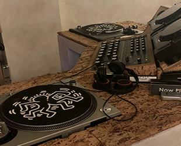

Duurzaamheid
Duurzaamheid is belangrijk. We proberen de aarde zo lang mogelijk leefbaar te houden voor komende generaties. Een Plantaardig dieet is een van de vele manieren om een stukje aardiger te zijn voor de aarde. Op deze pagina laat ik zien waar Hearth aan bijdraagt, door enkel plant-based ingrediënten te verwerken in de gerechten.

Voedsel
Vee neemt wel 80% van de mondiale landbouw in beslag, maar produceert toch minder dan 20% van het wereldwijde aanbod aan caloriën. Vlees is dus ontzettend ruimte-innemend, slecht voor het millieu en is ook nog eens een ontzettend inefficiente manier om eten te produceren.
Plantaardig eten is daarom een van de grootste stappen die je kunt zetten om duurzamer te leven. Zo kun je door vegan te eten, wel 75% minder landoppervlakte gerbuiken, en heb je 54% minder water nodig.
Hearth's impact
Hearth maakt iedere dag een impact om de wereld een stukje duurzamer, mooier en gezelliger te maken. Er komen iedere dag mensen die er nog niet eerder zijn geweest en maken kennis met een manier van eten waar zij wellicht nog niet eerder mee in aanraking zijn gekomen. Hearth kan voor deze mensen dus een inspiratie zijn om een beetje (plant)aardiger te zijn voor mens, dier en millieu. Dit vind ik heel mooi en belangrijk.